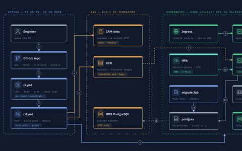
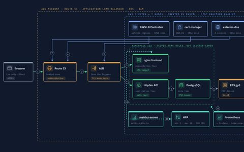
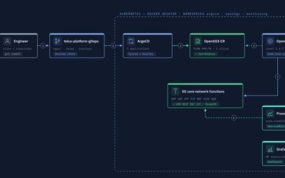
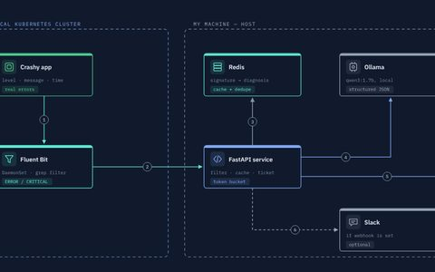
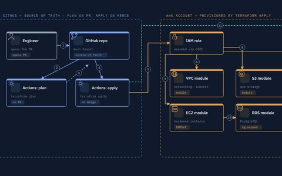
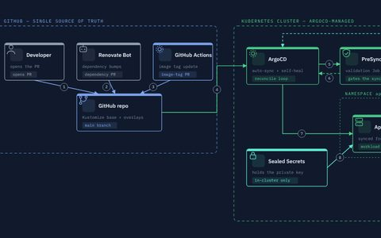
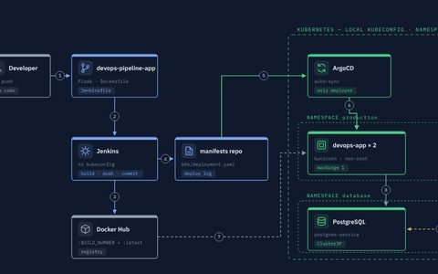
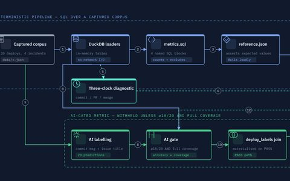

About
👋 Hi, I'm Ahmed — a DevOps and platform engineer based in Daejeon, South Korea. Right now I'm freelancing, taking on SRE, platform and DevOps-AI work: Kubernetes clusters, GitOps and Terraform pipelines on AWS, observability, and tooling that lets an LLM help during an incident without being trusted blindly.
I came to this through networks. My first engineering job was keeping production network infrastructure up for enterprise clients in Ghana — releases, on-call and root-cause analysis, before I knew to call it SRE. Then I moved to Korea for an MSc in telecommunications and spent two years as a research assistant in a radar-sensing lab, where debugging RF hardware one layer at a time turned out to be excellent practice for debugging distributed systems.
I'm a Certified Kubernetes Administrator and an AWS Solutions Architect – Associate. Every project on this page is written up the same way: what I built, what I measured, what I only observed, what holds only by design — and what broke. I'd rather show you the 403s than pretend they didn't happen.
I'm open to freelance engagements and full-time roles, remote or with relocation.
Experience
-
2025 — Now
Freelance DevOps, Platform & SRE Engineer · Independent
Remote · Daejeon, South Korea
Taking on SRE, platform and DevOps-AI work: Kubernetes platforms and GitOps delivery, Terraform on AWS, observability with Prometheus and Grafana, and LLM-assisted tooling for incident response and code review. Alongside client work I build in public — every project in the archive below is written up with what I measured, what I only observed, and what broke.
- Kubernetes
- ArgoCD
- Terraform
- AWS
- Prometheus
- Python
-
2023 — 2025
Graduate Research Assistant · Hanbat National University
Intelligent Antenna & Radar Sensing Lab · Daejeon, South Korea
- Designed and optimised complex telecommunications systems with systematic, data-driven methods.
- Diagnosed failures across RF hardware, instrumentation and software toolchains — isolating one layer at a time, the same method I use on distributed systems.
- Worked with international, multidisciplinary teams across time zones; wrote the documentation and presented findings to faculty and external stakeholders.
- Research
- Instrumentation
- Debugging
- Technical writing
-
2020 — 2021
Network Systems Engineer · K-NET Limited
Telecommunications infrastructure · Accra, Ghana
- Deployed and maintained production network infrastructure for enterprise clients across distributed sites, sustaining 99% service availability.
- Managed infrastructure releases and configuration changes; carried on-call production support with root-cause analysis — an SRE rotation before I knew to call it that.
- Configured IP addressing, subnetting, VLAN segmentation and OSPF/BGP routing, and integrated IoT devices for remote fuel-level monitoring across sites.
- OSPF / BGP
- VLANs
- On-call
- IoT
-
2019
IT Technician (Internship) · The Multimedia Group Ltd.
Accra, Ghana
Deployed and configured workstations, operating systems and network devices across office and retail sites; owned Tier 1–2 escalations and the full PC lifecycle through a hardware refresh, under peak business-hour pressure.
- Endpoints
- Networking
- Support
- 2025MSc, Electrical Engineering (Telecommunications)Hanbat National University, Daejeon, South Korea
- 2020BSc, Telecommunication EngineeringKwame Nkrumah University of Science and Technology, Kumasi, Ghana
Toolbox
Containers & orchestration
- Kubernetes (CKA)
- EKS
- Helm
- Kustomize
- ArgoCD
- Operators
- Docker
Infrastructure as code
- Terraform
- Ansible
- CloudFormation
- Checkov
- TFLint
CI/CD
- GitHub Actions
- Jenkins
- CodePipeline
- SonarQube
- Trivy
- Renovate
Observability
- Prometheus
- Grafana
- CloudWatch
- Fluent Bit
- DuckDB
AWS
- EKS
- EC2
- VPC
- IAM
- S3
- RDS / Aurora
- Lambda
- Route 53
- CloudFront
Security
- IAM least privilege
- OIDC federation
- RBAC
- Sealed Secrets
- permissions boundaries
AI for operations
- Ollama
- Gemini API
- RAG
- MCP
- LLM output gating
Languages & networking
- Python
- Bash
- Linux
- NGINX
- TCP/IP
- OSPF / BGP
Selected work
-

Kubernetes · Decommissioned
A FastAPI + React template, from compose to Kubernetes
Terraform, Ansible, one Helm chart and a pipeline around an existing app — then a broken release shipped on purpose, which never took traffic.
A broken release never took traffic · HPA 2 → 4 → 6 in about a minute
- Kubernetes
- Helm
- Terraform
- Ansible
- GitHub Actions
-

Kubernetes · Decommissioned
Production application on Amazon EKS
A three-tier app on a two-node cluster — DNS, TLS, storage and autoscaling all provisioned by controllers, not by hand.
TLS, DNS and ALB with zero console clicks · HPA 2 → 3 at 60% CPU
- Amazon EKS
- Helm
- cert-manager
- IRSA
- HPA
-

Kubernetes · Local cluster
A GitOps-driven 5G core on Kubernetes
Open5GS reconciled by an Operator from Git: a new network slice is a two-line commit, synced about two minutes later.
New network slice: commit → synced in ~2 minutes
- ArgoCD
- Operators
- Open5GS
- Kustomize
- Prometheus
-

AI × Ops · Local cluster
AI log analysis and incident response
Fluent Bit ships errors to a local LLM; each new error signature becomes one GitHub issue with a root cause and a kubectl fix.
One GitHub issue per error signature, not per log line
- Fluent Bit
- Ollama
- Redis
- FastAPI
-

IaC · Decommissioned
Terraform GitOps pipeline on AWS
A five-module AWS stack where every change is a plan on PR, applied only on merge, authenticated via OIDC.
Zero stored AWS keys — OIDC only, apply only on merge
- Terraform
- GitHub Actions
- OIDC
- AWS
-

Kubernetes · Decommissioned
GitOps deployment pipeline with ArgoCD
A cluster that reverts manual changes within seconds — Git is the only way anything gets in.
Manual drift reverted by self-heal within seconds
- ArgoCD
- Kustomize
- Sealed Secrets
- Renovate
-

Kubernetes · Local cluster
Jenkins CI handing off to ArgoCD
Two repos and one rule: CI commits an image tag to Git and never touches the cluster. ArgoCD is the only thing that deploys.
~2 min from manifest commit to 2/2 pods running
- Jenkins
- ArgoCD
- Terraform
- Docker
-

Observability · Local script
DORA delivery scoreboard with DuckDB
Four metrics computed in SQL; a fifth withheld until an AI classifier's labels pass an 18/20 accuracy gate.
AI-derived metric gated at ≥18/20 — released at 20/20
- Python
- DuckDB
- SQL
- DORA
All 29 case studies
Each one has an architecture diagram, a wiring table, a ledger of what was measured versus assumed, screenshots, and the failures worth keeping. The code lives in the Projects repo and the source repos it links to.
| Area | Case study | Built with | Status |
|---|---|---|---|
| Kubernetes | A FastAPI + React template, from compose to KubernetesTerraform, Ansible, one Helm chart and a pipeline around an existing app — then a broken release shipped on purpose, which never took traffic. |
|
Decommissioned |
| Kubernetes | Production application on Amazon EKSA three-tier app on a two-node cluster — DNS, TLS, storage and autoscaling all provisioned by controllers, not by hand. |
|
Decommissioned |
| Kubernetes | A GitOps-driven 5G core on KubernetesOpen5GS reconciled by an Operator from Git: a new network slice is a two-line commit, synced about two minutes later. |
|
Local cluster |
| Kubernetes | GitOps deployment pipeline with ArgoCDA cluster that reverts manual changes within seconds — Git is the only way anything gets in. |
|
Decommissioned |
| Kubernetes | Jenkins CI handing off to ArgoCDTwo repos and one rule: CI commits an image tag to Git and never touches the cluster. ArgoCD is the only thing that deploys. |
|
Local cluster |
| Kubernetes | Kubernetes CI/CD with Helm and monitoringA Jenkins pipeline that only passes when the rollout does, a reusable Helm chart, and an alert that waits two minutes before it fires. |
|
Local cluster |
| Kubernetes | Launching an EKS cluster with eksctlOne command, two CloudFormation stacks, three nodes — then I terminated the nodes to watch them come back. |
|
Guided lab |
| Kubernetes | Packaging a backend for EKS with ECRA Flask API cloned, built and pushed to a private ECR repository — and the Docker permission fix done properly instead of with sudo. |
|
Guided lab |
| CI/CD | Jenkins pipeline gated on SonarQubeBuild, test, analyse, then containerise only if the quality gate passes — with Slack told either way. |
|
Guided lab |
| CI/CD | A 7-day AWS-native CI/CD pipelineCodeArtifact, CodeBuild, CodeDeploy and CloudFormation, one per day, joined into CodePipeline — including a rollback I broke on purpose. |
|
Guided lab |
| CI/CD | Semantic tests for a RAG API in GitHub ActionsCI that fails when the knowledge base degrades, not just when the code does — made deterministic with a mock LLM mode. |
|
CI workflow |
| CI/CD | AI pull-request review with GeminiEvery PR gets a security review comment and a Critical / Warning / Good label before a human opens it. |
|
CI workflow |
| CI/CD | CI fundamentals with GitHub ActionsA pytest suite on every push and PR, a bug introduced on purpose to prove it bites, and an installable package as the artifact. |
|
CI workflow |
| IaC | Terraform GitOps pipeline on AWSA five-module AWS stack where every change is a plan on PR, applied only on merge, authenticated via OIDC. |
|
Decommissioned |
| IaC | Terraform fundamentals: a locked-down S3 bucketinit, plan, apply — a private bucket, an ownership rule and an uploaded object, all from one main.tf. |
|
Guided lab |
| AWS | Serverless lead capture at a real domainS3, CloudFront and ACM in front; API Gateway, Lambda, SES and DynamoDB behind — no servers, run at kahmedt.com. |
|
Decommissioned |
| AWS | An IAM permissions boundary as a role ceilingThe same widened policy, simulated before and after: CreatePolicyVersion goes from allowed to denied by the boundary. 8/8 predictions held. |
|
Decommissioned |
| AWS | A three-tier web architecture, serverlessCloudFront and a private bucket, API Gateway and Lambda, DynamoDB — each tier built and tested on its own. |
|
Guided lab |
| AWS | Sharing container images across AWS accountsTwo accounts swap private ECR images and deploy each other's app on Elastic Beanstalk — through two layers of 403s. |
|
Guided lab |
| AWS | Tag-based least privilege with IAMDevelopers control development-tagged EC2 and nothing else — tested as the user, then in the Policy Simulator. |
|
Guided lab |
| AWS | A Docker app on Elastic BeanstalkA three-line Dockerfile tested locally, live on a managed environment in about ten minutes, updated with one upload. |
|
Guided lab |
| AWS | A PHP app on EC2 writing to Amazon AuroraAn Aurora MySQL cluster wired to an EC2 web host, every write checked again from the MySQL CLI. |
|
Guided lab |
| AWS | A static website on S3, access model and allA 403 worked through properly, and a bucket policy that stops even me from deleting the index page. |
|
Guided lab |
| AI × Ops | AI log analysis and incident responseFluent Bit ships errors to a local LLM; each new error signature becomes one GitHub issue with a root cause and a kubectl fix. |
|
Local cluster |
| AI × Ops | A RAG API from laptop to KubernetesFastAPI, Chroma and a local model; then a Docker image on Docker Hub; then a Minikube Deployment I killed to watch it come back. |
|
Local cluster |
| AI × Ops | An AI security scanner for PythonSource in, severity-rated findings out — each with why it's vulnerable, the impact, and a secure rewrite. |
|
Local script |
| Observability | DORA delivery scoreboard with DuckDBFour metrics computed in SQL; a fifth withheld until an AI classifier's labels pass an 18/20 accuracy gate. |
|
Local script |
| Observability | Grafana dashboards built through MCPSix panels over PostgreSQL, described in plain language to an agent that drives Grafana's API. |
|
Local stack |
| Networking | An NGINX traffic gateway you can watch workOne process as gateway and two backends; balancing, a cache MISS→HIT and a deliberate 502, all in one access log. |
|
Local lab |
Certifications
Introduction to DevOps · Linux Commands & Shell Scripting
IBM
Contact
If you need a Kubernetes platform stood up properly, a delivery pipeline untangled, or someone to make an on-call rotation quieter, I'd like to hear about it. The fastest way to reach me is email.
kingsleyswanzy@gmail.comHand-written HTML and CSS, hosted on GitHub Pages — no JavaScript, no framework, no build step for the pages themselves. Layout inspired by Brittany Chiang.